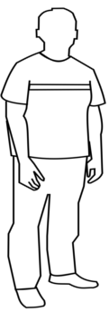
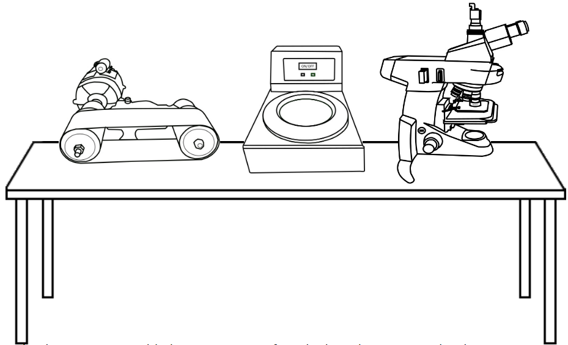
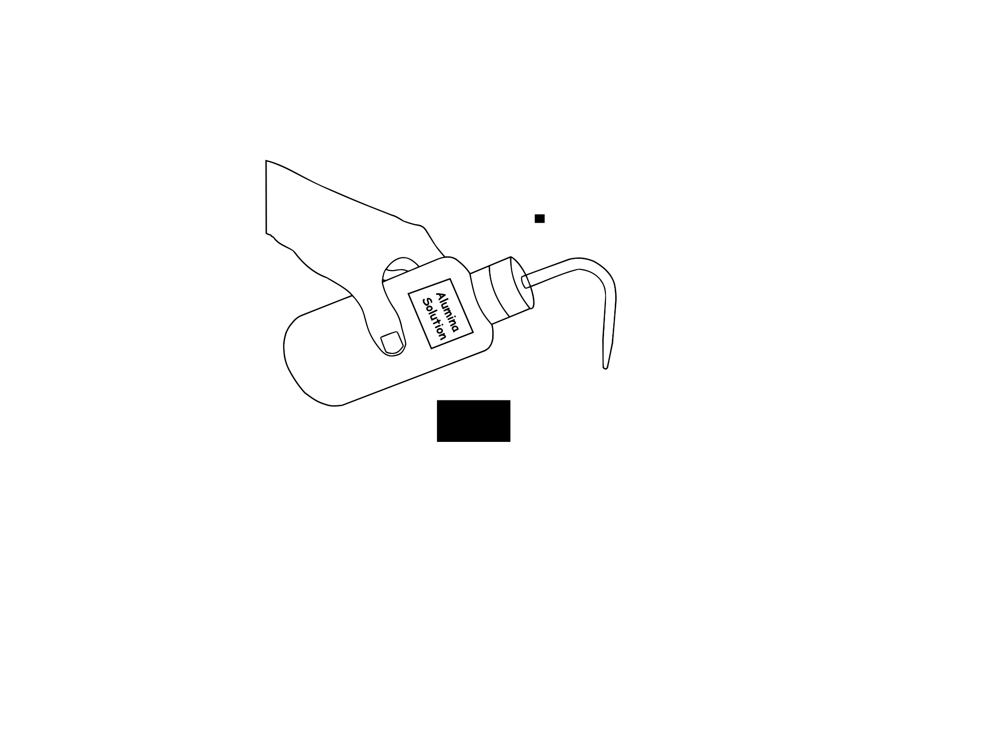
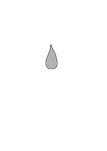

Grain Size Measurement
Objective
To measure the grain size of the given sample using ASTM Grain Size Number, Jefferies Planimetric Method and Heyn's Intercept method.
Apparatus used:
Metallurgical Microscope, Polishing Machine with Abrasives, Belt Grinder, Abrasive paper, Flat Glass plate with Wooden framework, Electric Hot Air Blower, Cotton, Etchant(Marbles Reagent and Acetic picral), Specimen.
Description Lattice : A Lattice is an ordered arrangement of atoms to form a crystal. It is the smallest repetitive unit, that repeats itself regularly in 3-dimensions to form the crystal. There are totally 14 recognized lattice arrangements known as Bravais Lattices.
Magnesium alloys : Magnesium, the lightest structural metal, mixed with other metals such as aluminium, zinc, silicon, manganese, copper and zirconium form magnesium alloys. It has a hexagonal lattice structure which has a more complex plastic deformation than cubic latticed metals like aluminium. Hence, magnesium alloys are typically used as cast alloys.  
Select a sample to analyse its microstructure.
Grain Boundaries - A planar defect separating regions of different crystal orientation within a polycrystalline solid. It is the interface between the two grains and tends to decrease the electrical and thermal conductivity of the material.
Obtain a flat surface on the specimen by belt grinding.


Support a polish paper of 1/0 fineness on a flat glass plate. Polish the specimen rubbing in forward direction only.
 1/0 Polish paper
Note:
1/0 Polish paper
Note:Move to the next finer paper (2/0 and 3/0) once the scratches on the specimen are uniform. While changing from one paper to another, the specimen and your hands should be cleaned free from the abrasive of the previous paper, and the specimen turned through 90°, so that the scratches from the previous paper are at right angles to the scratches from the next paper.
Finish polishing the specimen on 4/0 abrasive paper, wash hands and specimen.
 4/0 Polish paper
4/0 Polish paper
Do the fine polishing on the disc polishing unit.
 


Etch the specimen with Acetic Picral by swabbing for a few seconds. Wash and dry.


 Note:Acetic Picral (ASTM etchant No. - 124) - It is a solution composed of 5 mL Acetic Acid, 6 g Picric Acid, 10 mL Water, 100 mL Ethanol, commonly used for Mg alloys with Al & Zn with Al + Zn < 5%
Note:Acetic Picral (ASTM etchant No. - 124) - It is a solution composed of 5 mL Acetic Acid, 6 g Picric Acid, 10 mL Water, 100 mL Ethanol, commonly used for Mg alloys with Al & Zn with Al + Zn < 5%
Examine the specimen under the microscope and observe the structural features.


Planimetric method
N 1(number of full grains in circle) = 33
N 2 (number of grains intercepted by circle) = 22
N A = f*(N 1 + N 2/2) ( N A = number of grains per mm at 1x)
Where f is jefferies multiplier = (magnifications 2)/circle area
Circle here has 20 mm radius and magnification is 200x
So f = (200 * 200)/(π*20*20)
= 32
N A = 32*(33 + 22/2)
= 1408 number of grains per mm 2 at 1x
ASTM grain size, G, can be found using the equation
G = 3.322 * (log NA) - 2.95 (at 100x)
G = 3.322 * (log 1408) - 2.95
= 7.51
| Line no. | No. of grains intercepted |
|---|---|
| 1 | 9 |
| 2 | 9 |
| 3 | 11 |
| 4 | 14 |
| 5 | 11 |
| 6 | 9 |
| 7 | 10 |
| 8 | 13 |
Each line was 50mm
Average number of grains intercepted = 10.75
Average line length intersected = 50/10.75 = 4.65
Average grain diameter d = 4.65 / 200(magnification) = 0.023255 mm
d = 1/(N A1/2)
Substituting d = 0.023255
N A = 18.5
G = 3.322 * (log N A) - 2.95
= 1.26